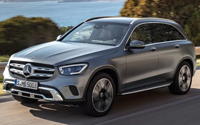
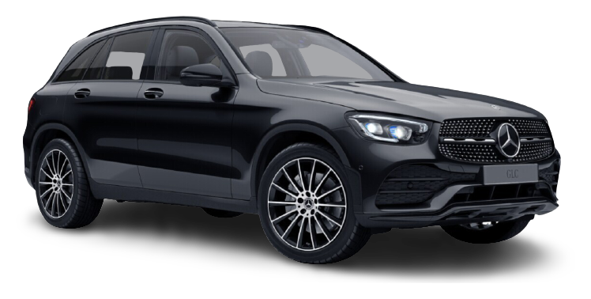
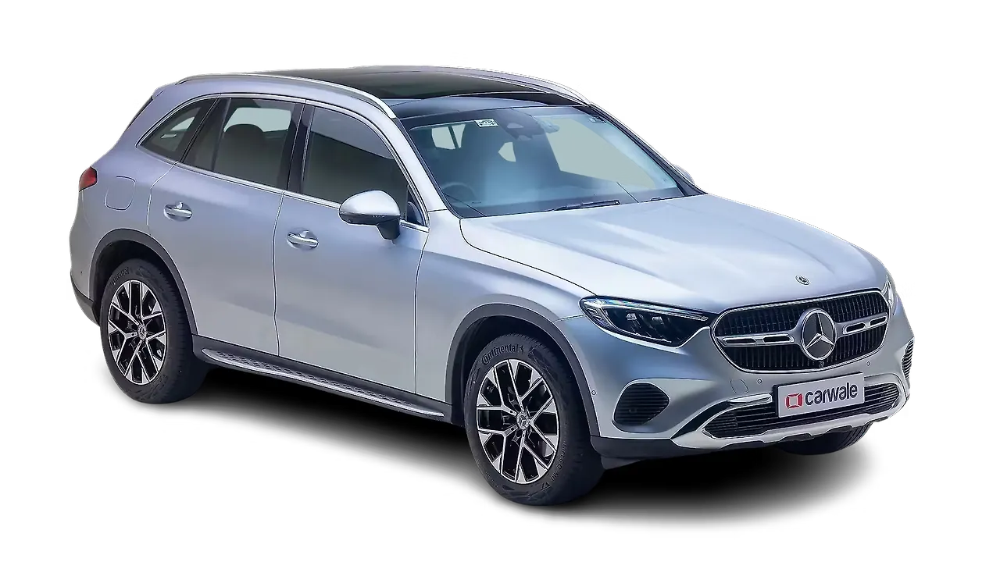
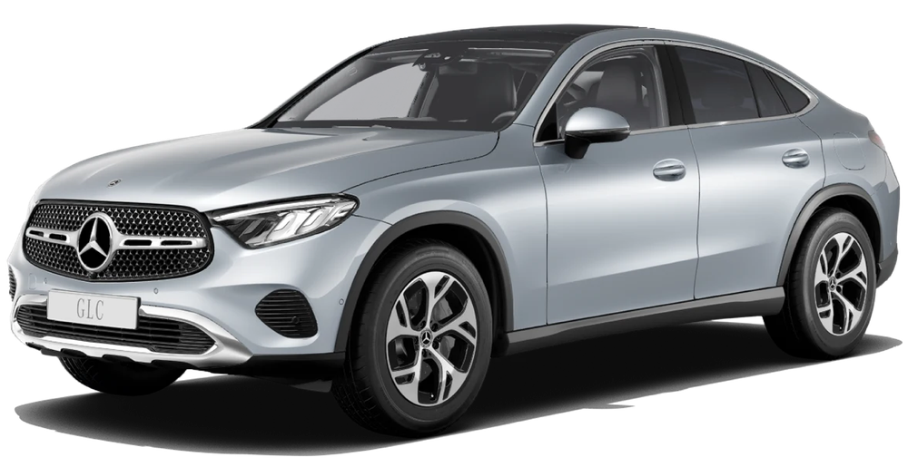
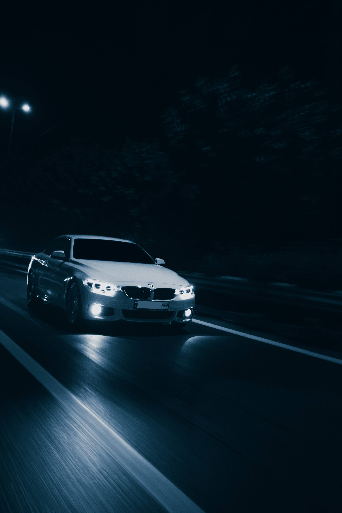

MERCEDES-BENZ
Mercedes-Benz GLC
جميع نسخ مرسيدس GLC مع المواصفات الرسمية مرتبة في صفحة واحدة، لتسهيل المقارنة بين جميع الإصدارات.
جميع نسخ مرسيدس GLC مع المواصفات الرسمية مرتبة في صفحة واحدة، لتسهيل المقارنة بين جميع الإصدارات.

| المحرك | 2.0 لتر تيربو + نظام هجين خفيف |
| عدد الأسطوانات | 4 |
| القوة | 204 حصان |
| عزم الدوران | 320 نيوتن متر |
| ناقل الحركة | 9G-TRONIC |
| نظام الدفع | دفع خلفي |
| التسارع (0-100) | 7.8 ثانية |
| السرعة القصوى | 221 كم/س |
| عدد المقاعد | 5 |
| نوع الوقود | بنزين |

| المحرك | 2.0 لتر تيربو ديزل + نظام هجين خفيف |
| عدد الأسطوانات | 4 |
| القوة | 197 حصان |
| عزم الدوران | 440 نيوتن متر |
| ناقل الحركة | 9G-TRONIC |
| نظام الدفع | 4MATIC |
| التسارع (0-100) | 8.0 ثانية |
| السرعة القصوى | 219 كم/س |
| عدد المقاعد | 5 |
| نوع الوقود | ديزل |

| المحرك | 2.0 لتر تيربو + نظام هجين خفيف |
| عدد الأسطوانات | 4 |
| القوة | 258 حصان |
| عزم الدوران | 400 نيوتن متر |
| ناقل الحركة | 9G-TRONIC |
| نظام الدفع | 4MATIC |
| التسارع (0-100) | 6.2 ثانية |
| السرعة القصوى | 240 كم/س |
| عدد المقاعد | 5 |
| نوع الوقود | بنزين |

| المحرك | 2.0 لتر تيربو + محرك كهربائي (Plug-in Hybrid) |
| عدد الأسطوانات | 4 |
| القوة الإجمالية | 313 حصان |
| عزم الدوران | 550 نيوتن متر |
| ناقل الحركة | 9G-TRONIC |
| نظام الدفع | 4MATIC |
| التسارع (0-100) | 6.7 ثانية |
| السرعة القصوى | 218 كم/س |
| عدد المقاعد | 5 |
| نوع الوقود | هجين قابل للشحن (PHEV) |

| المحرك | 2.0 لتر تيربو + نظام هجين خفيف |
| عدد الأسطوانات | 4 |
| القوة | 421 حصان |
| عزم الدوران | 500 نيوتن متر |
| ناقل الحركة | AMG SPEEDSHIFT MCT 9G |
| نظام الدفع | AMG Performance 4MATIC |
| التسارع (0-100) | 4.8 ثانية |
| السرعة القصوى | 250 كم/س |
| عدد المقاعد | 5 |
| نوع الوقود | بنزين |

| المحرك | 2.0 لتر تيربو + محرك كهربائي |
| عدد الأسطوانات | 4 |
| القوة الإجمالية | 680 حصان |
| عزم الدوران | 1020 نيوتن متر |
| ناقل الحركة | AMG SPEEDSHIFT MCT 9G |
| نظام الدفع | AMG Performance 4MATIC+ |
| التسارع (0-100) | 3.5 ثانية |
| السرعة القصوى | 275 كم/س |
| عدد المقاعد | 5 |
| نوع الوقود | هجين قابل للشحن (PHEV) |